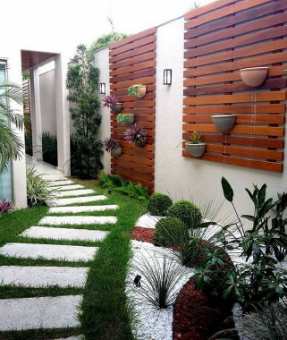

Esperamos poder inspirares y con gusto le asistirles
En la personalización o combinación de ideas basadas
En estos ejemplos de Jardines, Jardinería Cachi
Los ayudamos a diseñar, proveemos las plantas,
Instalamos y damos el servicio de mantenimiento del proyecto
No importa el tamaño o tipo de Jardín que desee.
Déjenos saber su idea y le asistimos
Cualquier pregunta que tenga al respecto o si desea una visita
Para cotizarse solo comuníquese vía nuestra pagina de contacto